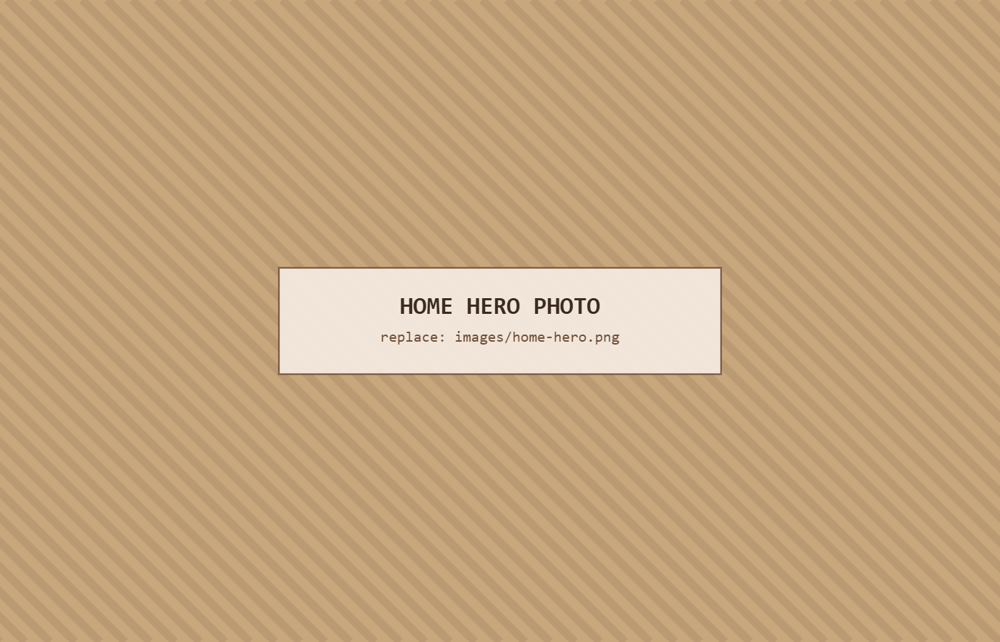

Welcome
Tucked into the quiet folds of the Western Cape, Paardekraal Kliphuis is a stone house where the day slows to the pace of the land. Wide skies, long light, and the deep hush of the veld — this is a place to arrive, unwind, and stay a while.
However far you have come, you will feel the distance settle the moment you step out of the car. Welcome — we are glad you made the journey.
